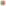

Particle System by Ryan Endacott
Number of particles:
0
FPS:
30
Fastmode is currently
off
Hold left click to create a graviton at the mouse.
Hold right click to emit new particles.
Press 1 to create an obstacle.
Press 2 to create a permanent graviton at the mouse. Note: Your graviton will turn off all others.
Press r to reset the simulation.
Press f to toggle fast mode.
